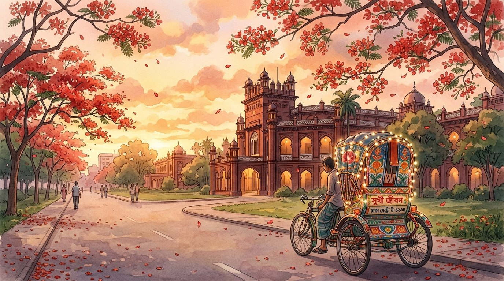

💻 For the best experience, please switch to a laptop. It's Totoro's promise.
A new message
Totoro has invited Moon Walker on a date.
Will you say yes?
Step 1 of 3
Where shall we go?
Pick our corner of Dhaka for the day.
Step 2 of 3
What shall we eat?
From street-side carts to cozy tables for two.
Step 3 of 3
And after that?
Pick how we spend the rest of the evening.
Level 5
Run to Totoro!
Jump over the obstacles with Space, the up arrow, or a tap.
Level 6
Fuchka Chase
Eat every fuchka before the CNGs, rickshaws and crows catch you. Mishti doi scares them off. Clear 3 stages, then find Totoro.
Arrow keys or WASD to move, or swipe on a touch screen.
Level 7
Run to the Bus Stop
Hop over potholes and water, stomp rickshaws and CNGs, and reach Totoro. 3 stages through Dhaka.
Arrow keys or A / D to run, Space or the up arrow to jump (hold for a higher jump).
One last question
After all this... do you love me? 🥺
Level 9 • Vintage Aerogramme
A Letter for Totoro 📮
A quiet Dhaka evening under the Krishnachura trees. Write from the heart.

Dearest Totoro,
TSC • Kacchi • Rickshaw Ride
With all my heart,
Moon Walker
Date confirmed
It's a date!
Where
Eating
Afterwards
Loading vinyl…
✨ Interactive Epilogues ✨
Totoro & Moon Walker
Level 11
Totoro Locator
Tap any spot in Dhaka to track down where Totoro is hiding.
Totoro
Permanent Resident • Moon Walker's Heart, Dhaka
"10/10, gives great hugs, shares his last piece of Kacchi, and is slightly obsessed with me."
"They sat in a rickshaw jam for 45 minutes and didn't even notice the green light."
"He let her have the last extra-spicy fuchka and held her hand when her eyes watered. True love."
Live Street View: POV, you're looking at the guy who made an entire video game just to ask you out.
The Moon Walker Star Atlas
Move the brass astrolabe lens across Dhaka's night sky, or select a celestial body below to align the telescope.
Scanning the Dhaka Night Sky...
Drag the brass reticle across the viewport (or click any constellation tab above) to cut through the city haze and inspect what Totoro found in the stars.
Alpha Moon Walker (α-MW)
-99.9 (Outshines Hatirjheel)
100% pull on Totoro's attention
"The smog hides the stars over Dhaka, yet even through the thickest haze, she remains the brightest thing in my entire sky."
Totoro's Proximity Vitals
Move your cursor closer to Totoro in the sensor well below, or trigger a stimulus button to observe his cardiovascular response.
Resting (Daydreaming)
98% (Acting Cool)
Nominal (Ears Normal)
Move cursor closer to Totoro or tap a stimulus button above...
Diagnosis: Acute Moon Walker Arrhythmia 💘
Unfiltered proximity to Moon Walker's smile.
Staring instead of reading the menu, sharing the last piece of Kacchi.
Immediate hand-holding in Dhaka traffic. Repeat indefinitely.